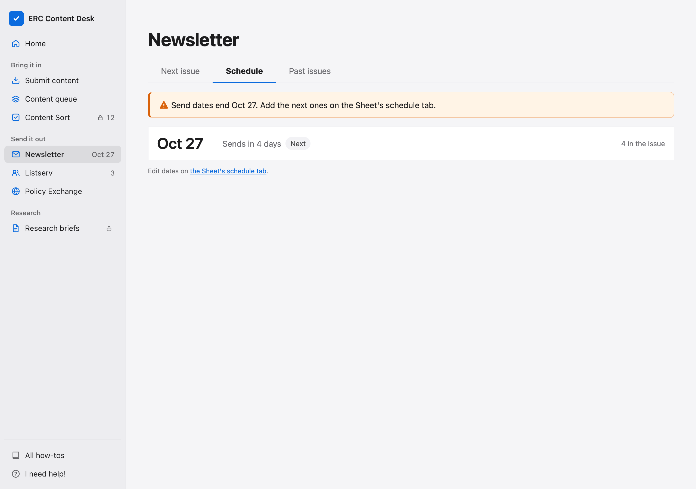
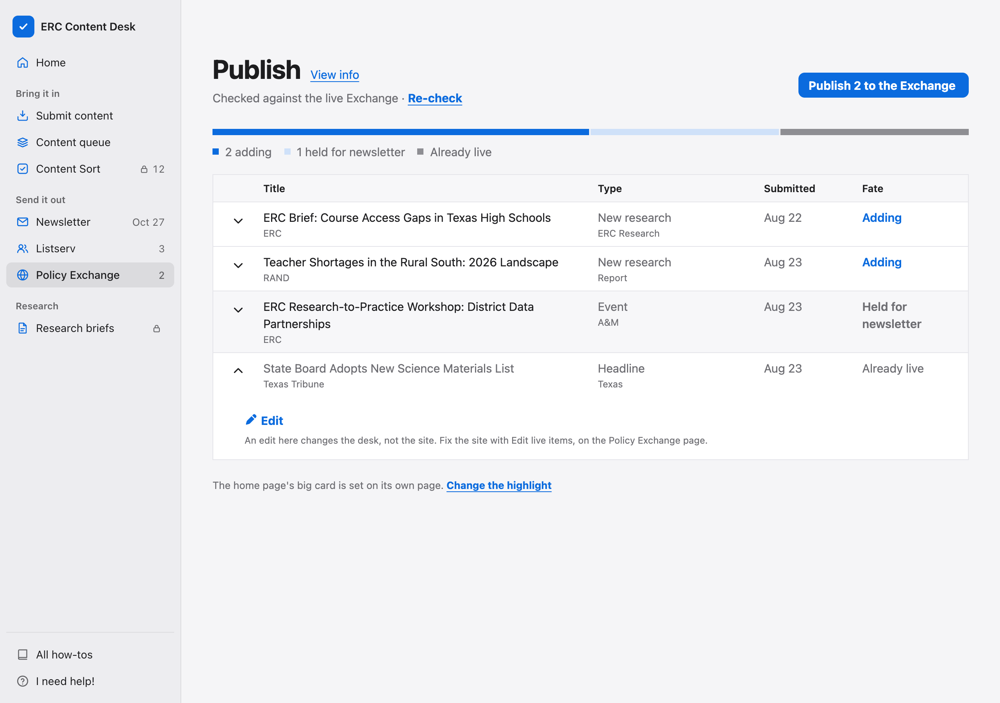
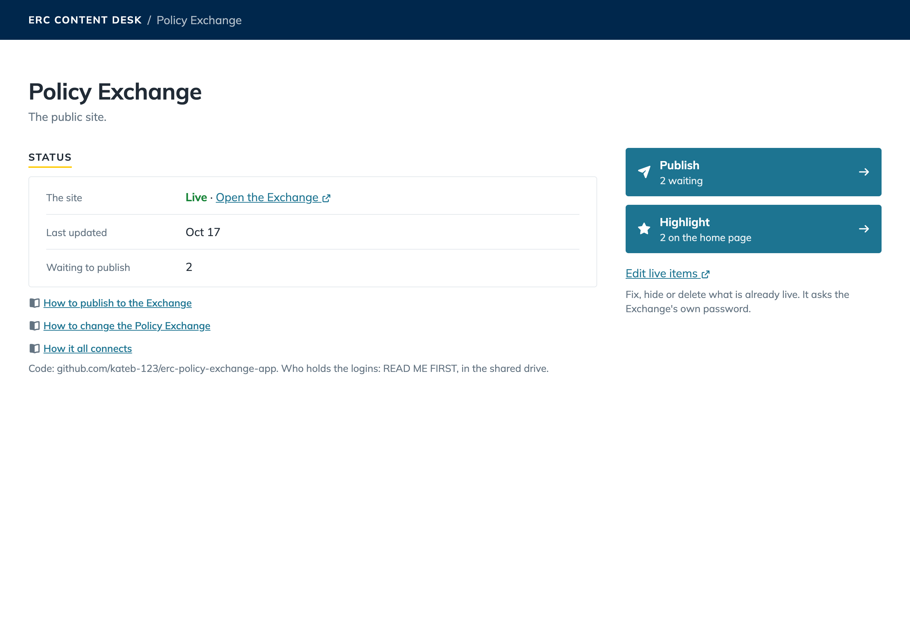
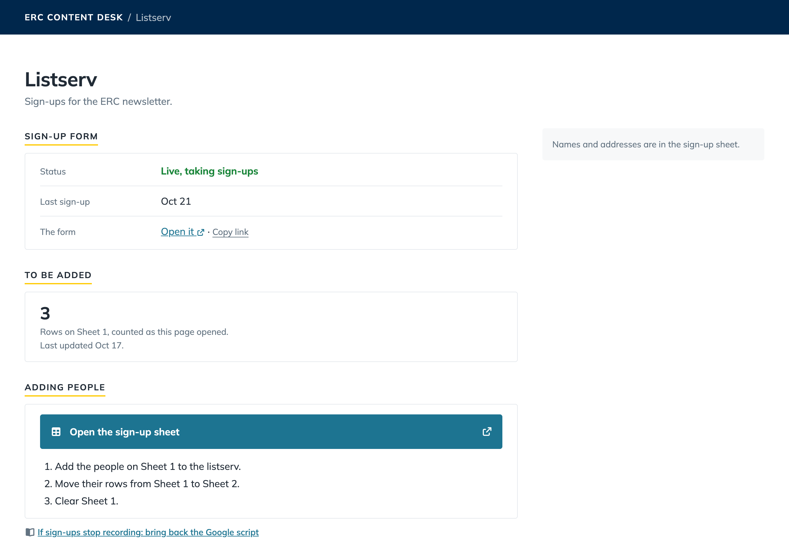
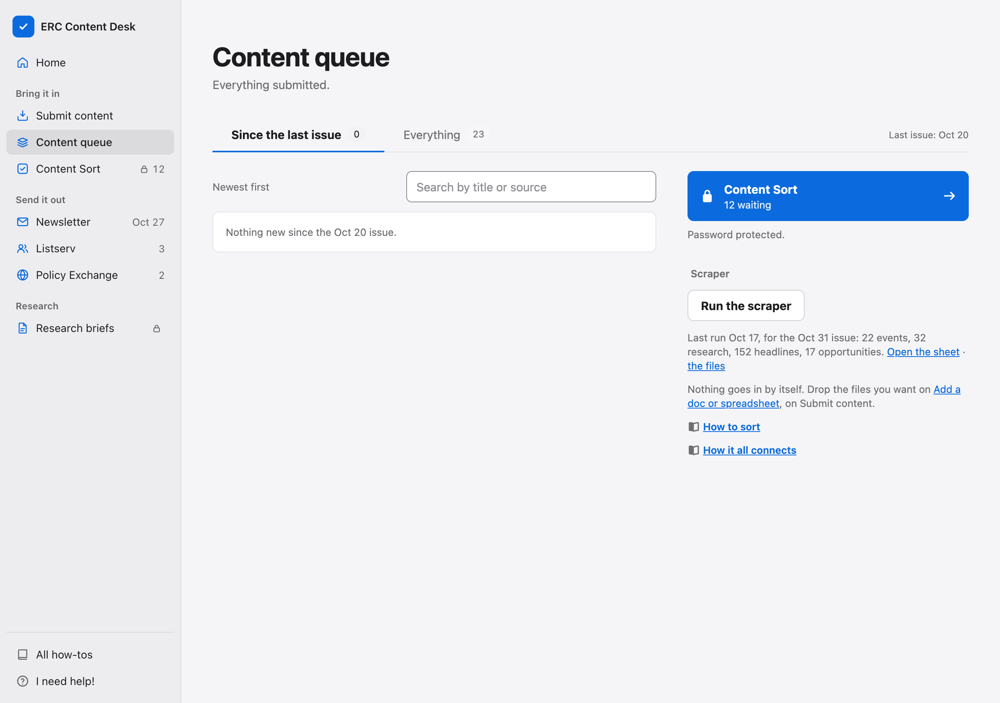

To fix an archived issue, fix it in the builder on the same computer and press Save to the archive again. This works only until you press Start the next issue.
A change on the Sheet reaches the desk within ten minutes; reload to see it. If it never does, see Bring back the Google scripts.
1Shows a week before the last send date: time to add the next ones.
2A send date: press it to open that issue on Next issue.
3The Sheet's schedule tab: opens it in a new tab. Type each date in column A, from row 2, as 2026-11-10.
!A date shown as 11/10/2026 is skipped.

The Exchange
Once an item is live, no Edit on the desk reaches the site. Only Highlight's card words and photo do, in the home page's big card.
1Already live: the item is on the site. Click its row to open it.
2Edit: changes the desk's copy, never the site.
!The desk's Delete never touches the site.

Fix a live item on the site itself. Use a laptop: the site's Edit buttons do not show on a phone.
1Find the item on the site, press Edit, fix it, press Save. Hide from the site, in the same Edit, takes it down.
2The big card never shows a Drive picture. Use Add photo on Highlight, or a picture link ending .jpg, .png or .webp.
iPublish and Highlight ask for the desk password at Confirm.

The listserv and the scraper
To see Sheet 1 as it is now, reload the browser page.
1To be added: the rows on Sheet 1 when the desk was loaded.
2Open the sign-up sheet: names and addresses, in a new tab.

Rows you delete on the Newsletter scrapes tabs stay deleted.
1Run the scraper: starts a run now.
2The last run: what it found. Open the sheet goes to Newsletter scrapes.
!The scraper does not read the Scraper sources Sheet. Changing its sources needs code.

Needs code
Ask the desk's owner, named in READ ME FIRST - ERC handoff, in the shared drive. With access to the repo, Claude Code can make the change.
What
Where it lives
Either password, or which pages ask for the desk's
Each site's Vercel settings; js/auth-view.js
The scraper's sources or its Monday time
sources.yaml and .github/workflows/scrape.yml in the erc-scraper repo
Item types and subtypes
js/schema.js, builder/js/model.js, public-pages/submit/ and the Exchange's js/app.js
A screen's words or button names
That screen's file in js/ or builder/js/
The front page's cards and public links
js/home-panel.js, js/public-links.js
How rewrites read
api/_lib/voice.js
The desk's look, or the email's and its blank template